Chapter Five
Illustrating the Language
page 4556. All the situations we have considered so far have been governed by not more than two conditions. In telecommunications and railway marshalling; in cataloguing and sorting; and in the correlating of complicated processes in large industries; problems involving dozens of different factors have to be solved. Later on we will consider ways of dealing with complex situations. One method is to draw a diagram representing the problem, as it is very often easier to understand a drawing than a lot of figures.
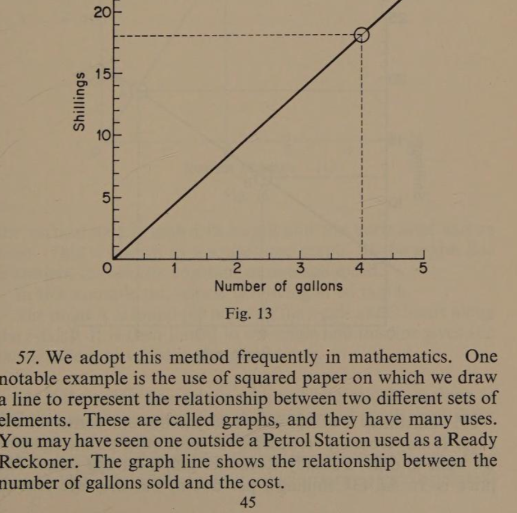
57. We adopt this method frequently in mathematics. One notable example is the use of squared paper on which we draw a line to represent the relationship between two different sets of elements. These are called graphs, and they have many uses. You may have seen one outside a Petrol Station used as a Ready Reckoner. The graph line shows the relationship between the number of gallons sold and the cost.page 46 In this example the dotted line shows the relationship between 4 gallons of petrol, and a cost of 18s.
To read this kind of graph you find the number of gallons along the bottom line and from the point on the graph line immediately above it you read across to the line showing the cost.
58. It is very easy to draw this kind of graph. First, two lines are drawn perpendicular to each other. They are called the axes. Equal divisions along them are numbered regularly to show the scales of values.
In the last example, one axis is showing the number of shillings in steps of five, while the other is showing the number of gallons in steps of one. It is a simple matter to find a point of relationship by making one calculation. In this case we choose 4 gallons, which at 4s. 6d. (4½ shillings) per gallon comes to 18s. This point being determined, a line joining it to the bottom corner was drawn. This is the graph line, and it gives the whole scale of relationships between the number of gallons and their cost at 4s. 6d. (4½ shillings) per gallon.
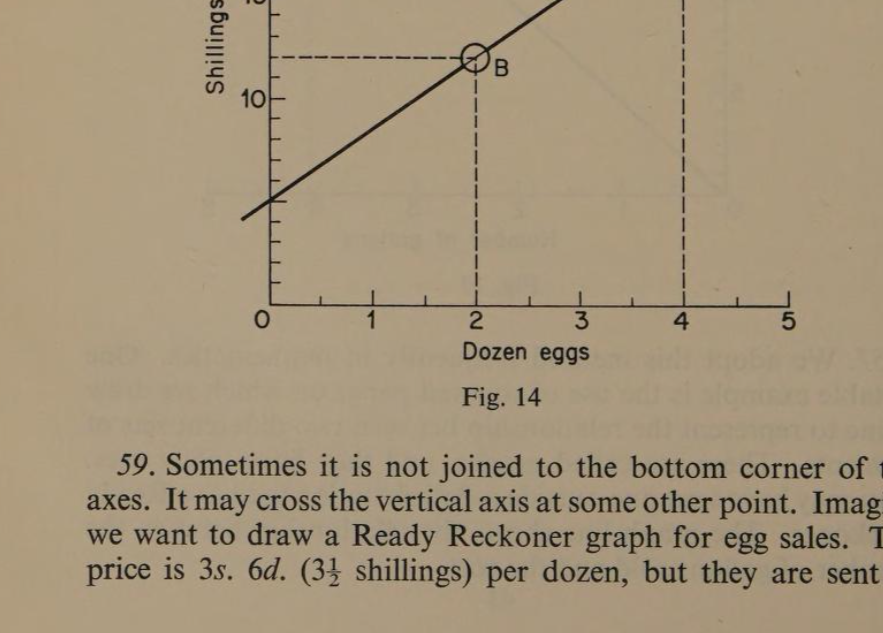
59. Sometimes it is not joined to the bottom corner of the axes. It may cross the vertical axis at some other point. Imagine we want to draw a Ready Reckoner graph for egg sales. The price is 3s. 6d. (3½ shillings) per dozen, but they are sent topage 47 market in boxes which hold up to 12 dozen. A charge of 5s. is made for the box, which is refunded later if the box is returned.
Here we have two calculations to fix the points A and B. These determine the slope of the line.
Notice that it crosses the vertical axis at point 5s. This shows that whatever the cost of eggs the 5s. is added for the box.
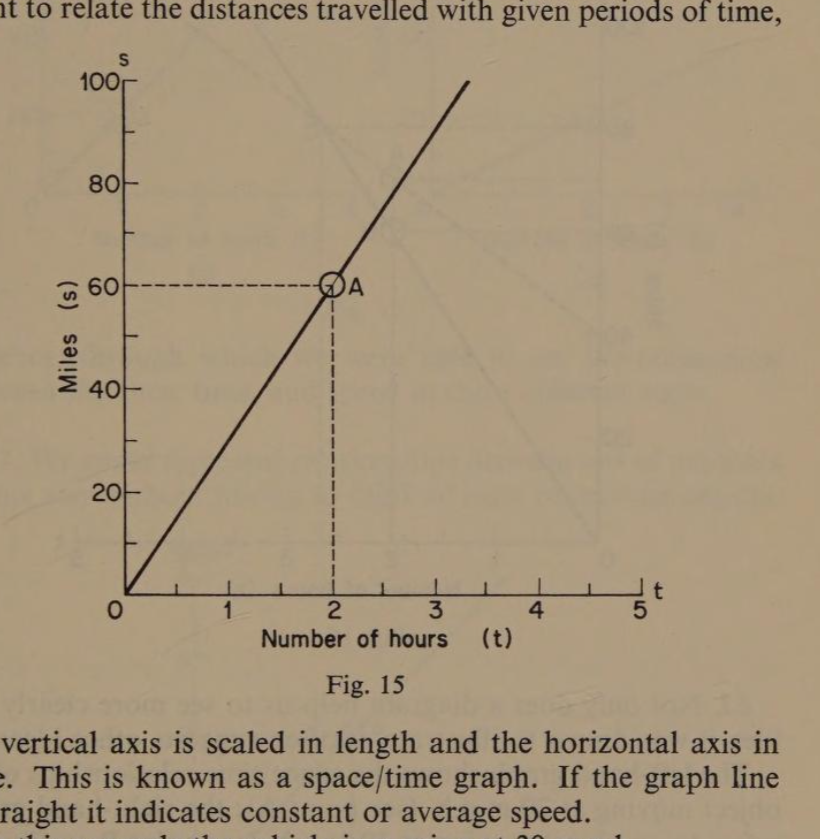
60. Using a graph to show the connection between two different kinds of units can be applied to moving objects. If we want to relate the distances travelled with given periods of time, the vertical axis is scaled in length and the horizontal axis in time. This is known as a space/time graph. If the graph line is straight it indicates constant or average speed.
In this example the vehicle is moving at 30 m.p.h. The point A is found [60 miles on the s-axis and 2 hours along the t-axis]. It is then joined to the origin and this line gives all the distances travelled in the given times.
61. If the space/time relationships of two vehicles moving at different speeds are drawn on the same travel graph area, some interesting conclusions are possible.
Imagine two vehicles travelling along the same route. One goes at 30 m.p.h., while a slower vehicle, starting from a point 40page 48 miles farther along the route travels at only 15 m.p.h. The point B is found as the point A was in the last example and is joined to the origin. This is the graph referring to the faster vehicle.
To plot the slower one we calculate how far it will have travelled beyond 40 miles in some convenient time (say 2 hours) and join this point (A) to the 40-mile point on the s-axis. Notice the two graphs cross at the point C.
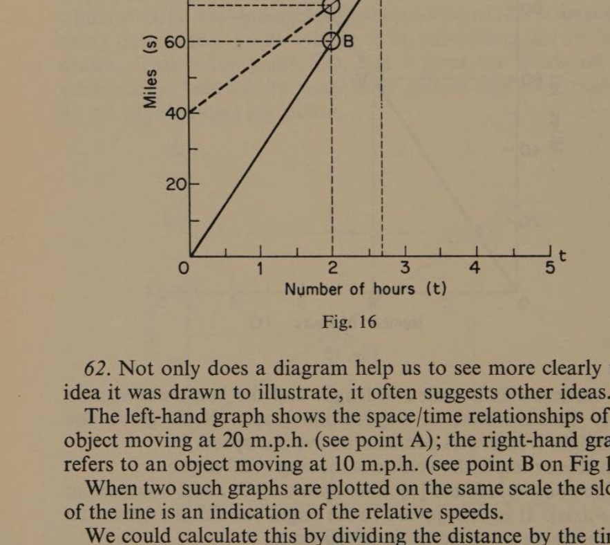
62. Not only does a diagram help us to see more clearly the idea it was drawn to illustrate, it often suggests other ideas.
The left-hand graph shows the space/time relationships of an object moving at 30 m.p.h. (see point A); the right-hand graph refers to an object moving at 10 m.p.h. (see point B on Fig. 17). When two such graphs are plotted on the same scale the slope of the line is an indication of the relative speeds.
We could calculate this by dividing the distance by the time. Expressed concisely in Algebra this is: v = s/t
Point A. v = 20/1 = 20 m.p.h. Point B. v = 20/2 = 10 m.p.h.
Because this relationship is expressible as an equation we can say: If v = s/t, then s = vt, and t = s/v (you should translate these).
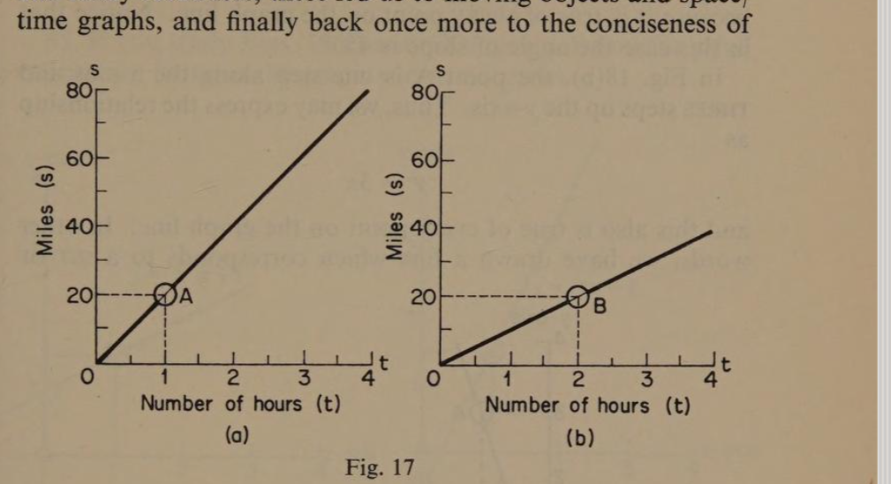
This is another example of the interconnection between different branches of mathematics. We started with sales and ready reckoners, these led us to moving objects and space/time graphs, and finally back once more to the conciseness ofpage 49 Algebra, through which we were able to see the connection between distance, time, and speed in three different ways.
63. We could represent relationships between sets of numbers in this way without having to think of sales or moving objects.
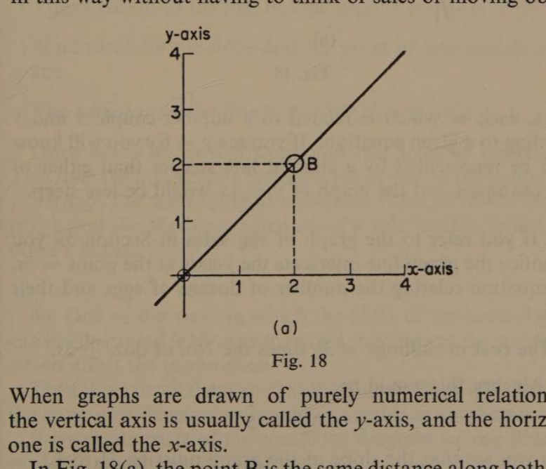
When graphs are drawn of purely numerical relationships the vertical axis is usually called the y-axis, and the horizontal one is called the x-axis. In Fig. 18(a), the point B is the same distance along both axes.page 50 We could express this as:
y = x
because it is true of every point on the graph line. Notice that in this case the angle of slope is 45°.
In Fig. 18(b), the point A is one step along the x-axis and three steps up the y-axis. Thus, we may express the relationship as
y = 3x
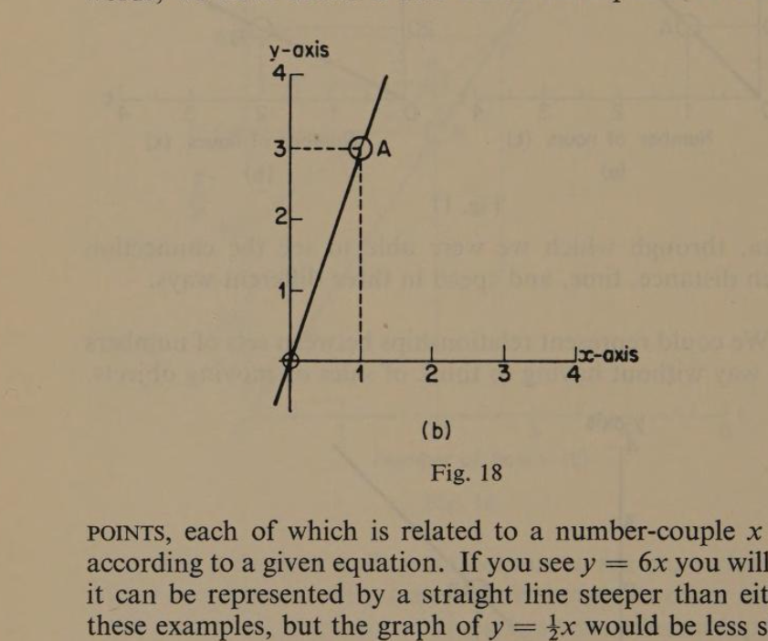
and this also is true of every point on the graph line. In other words, we have drawn a line which corresponds to a set of points, each of which is related to a number-couple x and y according to a given equation. This line can be represented by a straight line steeper than either of these examples, but the graph of y = 6x would be less steep.
64. If you refer to the graph of egg sales in Section 59 you will notice the graph line intersects the y-axis at the point = 5s. The cost in shillings = 3½ times the No. of doz. + 5s. In Algebra this would be
y = 3½x + 5
Do you see that the slope of the graph must be 3½ to 1?page 51 What is equally surprising is that the point at which it cuts the y-axis is also revealed in the equation, viz. + 5.
65. If you study Figs. 19(a) and 19(b) you will find the same connection between the graph and its equation.
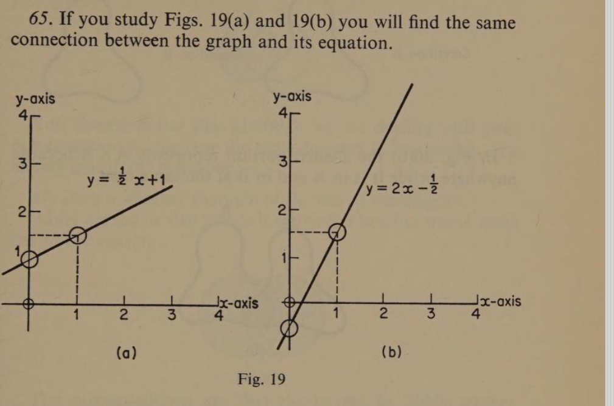
The equation to the line in Fig. 19(a) is y = (½)x + 1. Note carefully the slope and the point of intersection on the y-axis.
The equation to the line in Fig. 19(b) is y = 2x − ½. Once again notice the slope and the point of intersection. This time the intersection is below the origin, at the point (−½). Perhaps the main thing to remember from all this is that the graph and the algebraic equation of a relationship reflect each other’s nature.
66. One of the ways in which the ideas of Sentence Algebra can be illustrated is by drawing areas to represent the conditions which affect the proposition. Then if we draw them so that they partly overlap we can use the combined diagram to represent combined conditions. If we shade parts of the combined diagram we can illustrate various associations of conditions.page 52 Diagrams such as this are known as Venn diagrams after the mathematician John Venn (1834–1923).
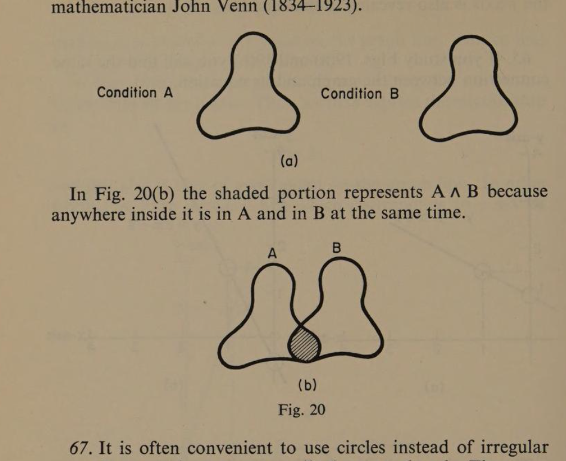
In Fig. 20(b) the shaded portion represents A ∧ B because anywhere inside it is in A and in B at the same time.
67. It is often convenient to use circles instead of irregular areas because they can so easily be reproduced. These are called Euler circles after the Swiss mathematician Leonard Euler (1707–83).
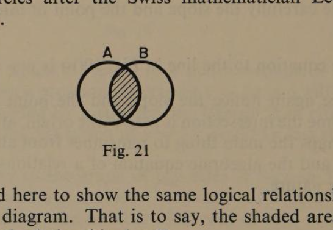
They are used here to show the same logical relationship as in the previous diagram. That is to say, the shaded area illustrates the logical relationship A ∧ B.
68. We now have a method of picturing the relationship between the conditions affecting the main proposition in a statement. If, for instance, we have a proposition governed by a single condition, as in this case: ‘John agreed to go provided the meeting was after 6 p.m.’page 53 The proposition is, ‘John will go to the meeting’ and the condition statement is, ‘provided it is after 6 p.m.’ We could illustrate the situation in this way:
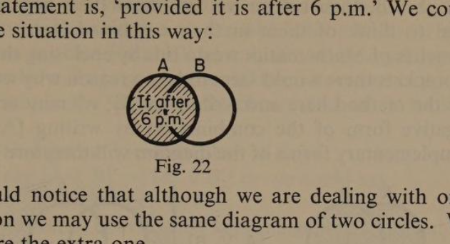
You should notice that although we are dealing with only one condition we may use the same diagram of two circles. We simply ignore the extra one.
69. Here is another example of the use of the diagram: ‘Mary agreed to visit Sheila if she or her brother would meet her at the station.’
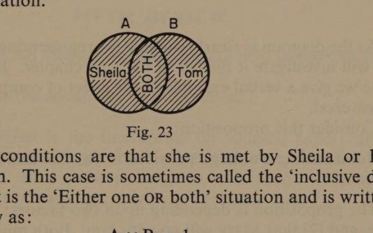
The two conditions are that she is met by Sheila or her brother Tom. This case is sometimes called the ‘inclusive disjunction’. It is the ‘Either one or both’ situation and is written algebraically as:
A ∨ B = 1
The diagram makes this clear because Mary does not mind which of them meets her, nor would she be upset if they both did.
70. Diagrams are only as useful as they are adequate to represent truly the ideas they are intended to clarify. In Section 51 we found it convenient to have a symbol for the negative form of a condition. Thus, our diagram will have to be able to be modified in this way. Let us experiment.
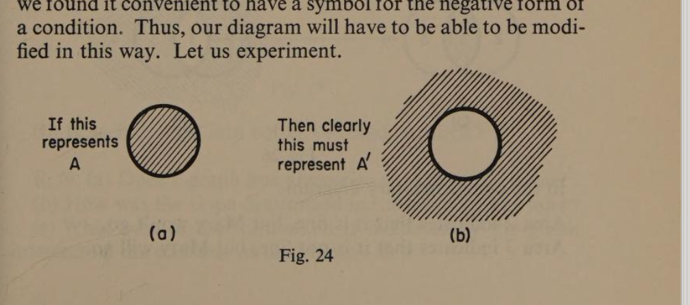
page 54 When two conditions are linked by some operator, as in this case A ∨ B, then before we can show their negative form we need to think of them in their combined state. As in other branches of Mathematics we do this by enclosing the expression in brackets; there would seem to be no reason why we should not use the method here and write [A ∨ B]; we may now show the negative form of the combination by writing [A ∨ B]′. The complementary forms of the diagram will therefore be:
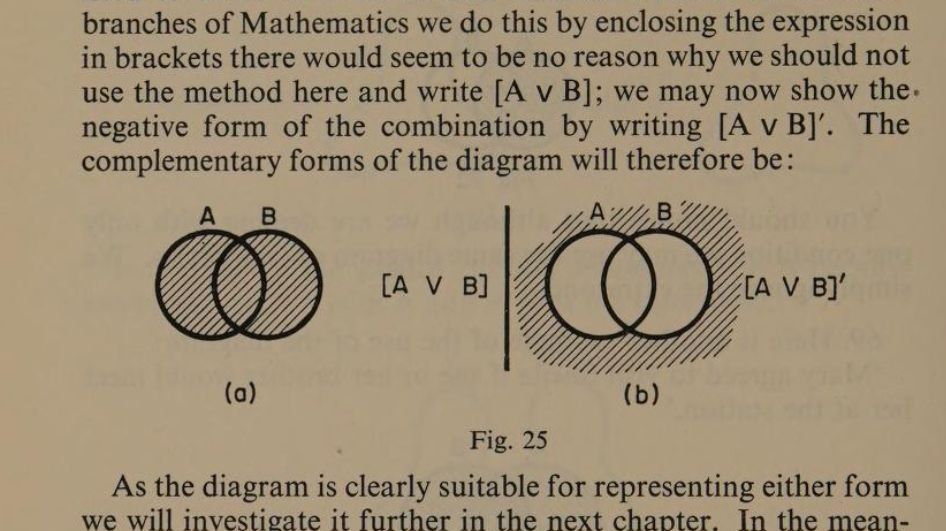
As the diagram is clearly suitable for representing either form we will investigate it further in the next chapter. In the meantime we give a verbal example of the effect of complementation or reversal. Consider this proposition:
‘John said he would go provided it was fine and Mary would go too.’
The proposition is depending upon two factors; [1] that it is fine, and [2] that Mary will go with him. Both must happen to make the proposition effective. Thus, the Algebra is A ∧ B = 1, and the diagram would be:
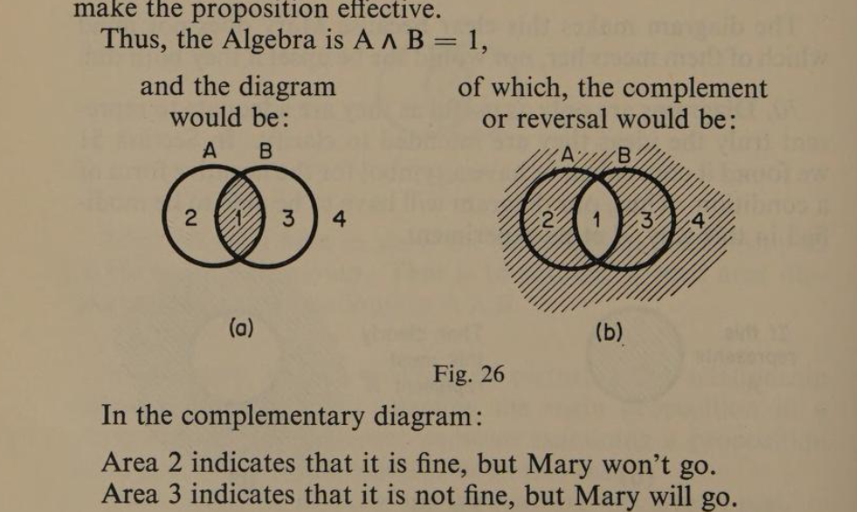
In the complementary diagram:
Area 2 indicates that it is fine, Mary won’t go.
Area 3 indicates that it is not fine, but Mary will go.page 55
Area 4 indicates that it is not fine nor will Mary go.
This is clearly a case of either or both for which the algebra is A′ ∨ B′, and is the situation under which John will not go. We can thus say that John will go only if both things happen, and therefore he will not go if either of them does not happen.
In other words the complement or reversal of A ∧ B is [A′ ∨ B′]. This may be expressed in a number of ways. We could say [A ∧ B]′ = [A′ ∨ B′] or we could say:
If A ∧ B = 1, then A′ ∨ B′ = 0
By which we are, of course, only saying algebraically what we would express verbally, i.e. it will only take one of the things to not happen to make John decide not to go.
Fifth Review
R.56. (a) What method was suggested to help us see relationships?
(b) What is the advantage of this method?
R.57. (a) What is the line drawn on squared paper called when it represents the relationship between two quantities?
(b) What is the popular name given to it when it is used to show the cost of varying amounts of the same thing?
R.58. (a) What name is given to the two perpendicular lines on which are marked the scales of a graph?
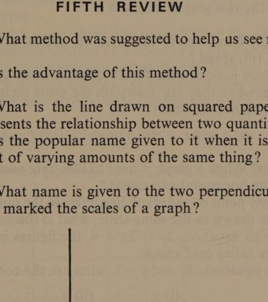
(b) Is each divided into equal or unequal steps?
R.59. (a) Does a graph line always go to the bottom corner?
(b) How was the slope determined in the graph of egg sales?
(c) What part of the transaction is indicated by the graph intersecting the cost axis at the point = 5s.?
R.60. (a) What does s stand for in the graph of constant speed?
(b) In such a graph what does a straight line indicate?
(c) What two quantities are related by all points on the graph?
(d) From the graph estimate the distance travelled in 3 hours.
(e) What amount of time is indicated by 1 small division on the graph?
(f) Say as accurately as you can from the graph how long it takes the vehicle to travel 40 miles.
(g) What number of miles is represented by 1 small division?
R.61. (a) Why was the graph line of vehicle A joined to the s-axis at the point 40 instead of the origin?
(b) What special information can be deduced from the point C where the two graphs intersect?
R.62. (a) What letters are used in places of (i) distance; (ii) time; (iii) speed?
(b) Which indicates the faster speed, a steep slope or a less steep one, when they are drawn on the same scales?
(c) Translate into words:
(i) v = s/t (ii) s = vt (iii) t = s/v
R.63. (a) When a graph is used to illustrate number relations what is the horizontal axis called?
(b) If any point on the graph line refers to the same number on both axes drawn to the same scale, what is the angle of slope?
(c) In this equation, 3y = 2x + 4, the figures in front of the y or x are called coefficients. In this equation, 2y = 5x − 3, what are the coefficients of: (i) x (ii) y?
(d) If you drew the graphs of the following equations they would all be straight lines, but they would have different angles of slope. Examine them and then arrange them in order beginning with the steepest.
(i) y = 5x (ii) y = 3x (iii) y = (½)x (iv) y = x/2 (v) 2y = 8x
R.64. In Section 59, referring to the graph of egg sales, the vertical axis was intersected at 5, and we saw that indicated the constant charge of 5s. for the box even when less than a full box was sold. In an equation such as y = 3x + 4, the end term (+ 4) is called the ‘constant term’ and from it we can deduce the intersection of the y-axis. Say where the graphs of the following equations would cut the y-axis.
(i) y = 5x + 2 (ii) y = 2x − 3 (iii) 3y = 6x + 12. (Take care with this one.)
R.65. In this paragraph we were asked to notice how a linear equation revealed the nature of its graph. In order to express this in words we describe the slope by saying how much it rises in a unit distance. For example, a slope of three to one is steeper than a slope of two in one, but not so steep as a slope of five in one.
(a) Why are such equations called ‘linear’?
(b) For each of the following say how steep their graph slope would be and where each would intersect the y-axis.
(i) y = 4x − 2 (ii) y = 3x + 5 (iii) 2y = 5x − 6
(c) Examine this graph and then say what its equation must be.
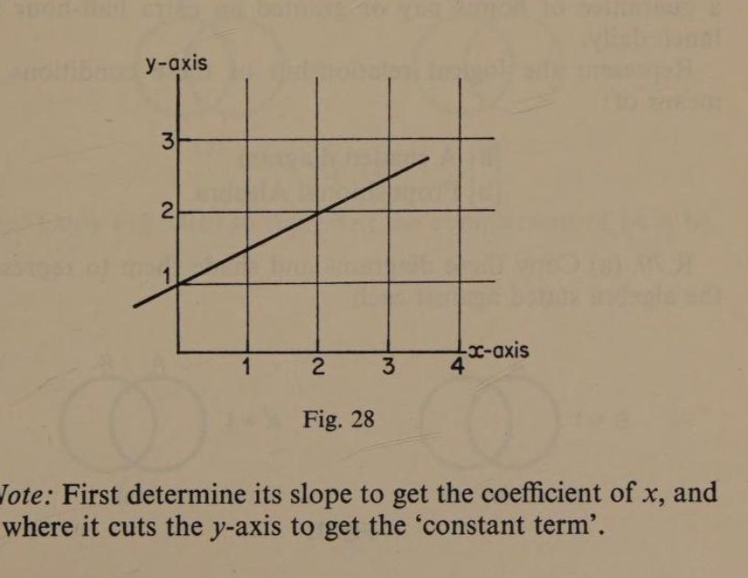
Note: First determine its slope to get the coefficient of x, and see where it cuts the y-axis to get the ‘constant term’.
R.66 and R.67. Examine these diagrams before attempting the questions.
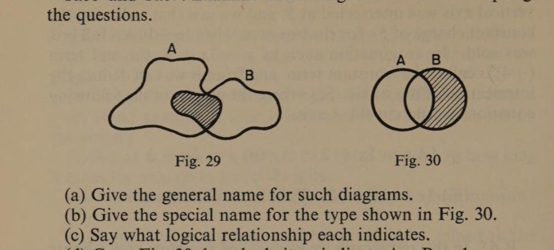
(a) Give the general name for such diagrams.
(b) Give the special name for the type shown in Fig. 30.
(c) Say what logical relationship each indicates.
(d) Copy Fig. 30, but shade it to indicate A ∨ B = 1.
R.68. Read this statement. ‘Tom said he would go to the dentist if his father and his mother went with him.’
(a) Draw Euler circles and represent the related conditions of the above statement by means of shading.
(b) Show the relationship symbolically by stating it in Propositional Algebra.
R.69. Read this statement. ‘The men agreed to end the strike provided they were given a guarantee of bonus pay or granted an extra half-hour for lunch daily.’ Represent the logical relationship of these conditions by means of:
[a] A shaded diagram
[b] Propositional Algebra
R.70. (a) Copy these diagrams and shade them to represent the algebra stated against each.
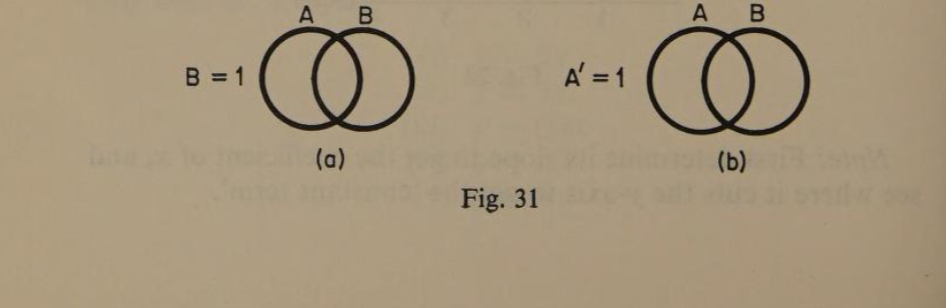
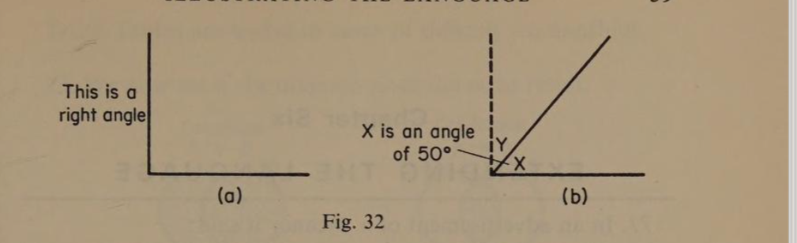
(a) This is a right angle. (b) X is an angle of 50°. Angle Y is called the complement of angle X. The name means that it completes the right-angle.
(b) What is the complement of angle X?
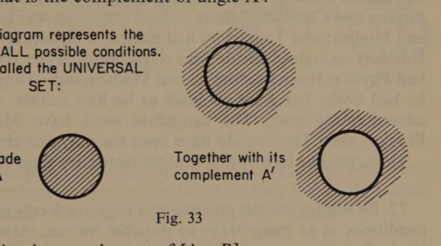
This diagram represents the set of all possible conditions. It is called the universal set: It is made up of A together with its complement A′.
(c) Write the complement of [A ∧ B].
(d) Copy Fig. 34(a) and shade it to represent [A ∧ B].
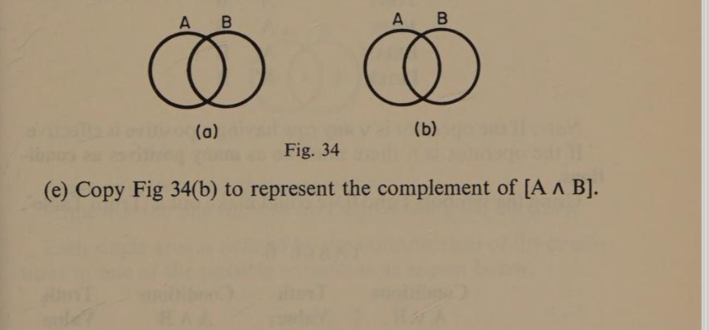
(e) Copy Fig. 34(b) to represent the complement of [A ∧ B].